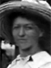

Soren Peter and Ane Christine Petersen Sorensen Family Group
Home
Histories
Charts
Photos
Maps
Restricted
News
Info
Contact
 symbol is a link to a history,
symbol is a link to a history,  a source, and the chart
a source, and the chart  symbol is a link to a family group chart.)
symbol is a link to a family group chart.)|
Hans Sorensen and Ane Nielsen |
----> |  |
Soren Peter Sorensen Born 16 Apr 1849 Terslose, Holbaek, Denmark Died 31 Jan 1929 Vejlby, Aarhus, Denmark Ane Christine Petersen Born 25 Jan 1848 Odder, Aarhus, Denmark Died 15 Jan 1930 Vejlby, Aarhus, Denmark Married 3 Mar 1872 Aarhus Domsogn, Aarhus, Denmark | |
|
Peder Hansen and Johane Pedersdatter |
|
Hans Peter Sorensen Born 23 Jun 1873 Aarhus, Aarhus, Denmark Died 29 May 1939 Vejlby, Aarhus, Denmark Married Anna Marie Svensson 2 Sep. 1911 Aarhus Domsogn, Aarhus, Denmark The 1st child of Soren Peter Sorensen and Ane Christine Petersen |
| * |
William Parley Sorensen Born 2 Jan 1875, Died 23 Jul 1875 Aarhus, Aarhus, Denmark The 2nd child of Soren Peter Sorensen and Ane Christine Petersen |
| * |
Carl Martin Sorensen Born 20 Aug 1877, Died 1 Sep 1877 Aarhus, Aarhus, Denmark The 3rd child of Soren Peter Sorensen and Ane Christine Petersen |
|  | Sophia Christene Sorensen Born 1 Nov 1879 Aarhus, Aarhus, Denmark Died 14 Nov 1953 Glenwood, Sevier, Utah, USA Married Isaac Stewart Hansen 19 Sep 1906 Manti, Sanpete, Utah, USA The 4th child of Soren Peter Sorensen and Ane Christine Petersen |
| * |
Henry Sorensen Born 15 Mar 1881 Aarhus, Aarhus, Denmark Died before 1890 The 5th child of Soren Peter Sorensen and Ane Christine Petersen |
| * |
Frode Mikuel Sorensen Born 24 May 1885, Died 30 Oct 1885 Beder, Aarhus, Denmark The 6th child of Soren Peter Sorensen and Ane Christine Petersen |
| * |
Klare Sorensen Born 18 Dec 1888, Died 2 Apr 1897 Beder, Aarhus, Denmark The 7th child of Soren Peter Sorensen and Ane Christine Petersen |